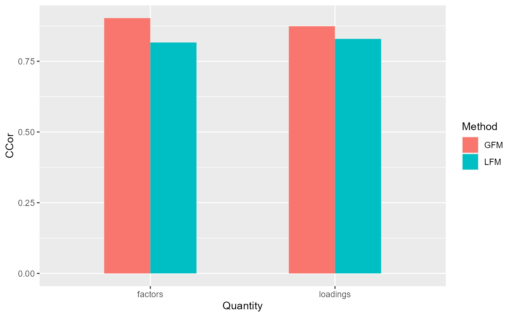
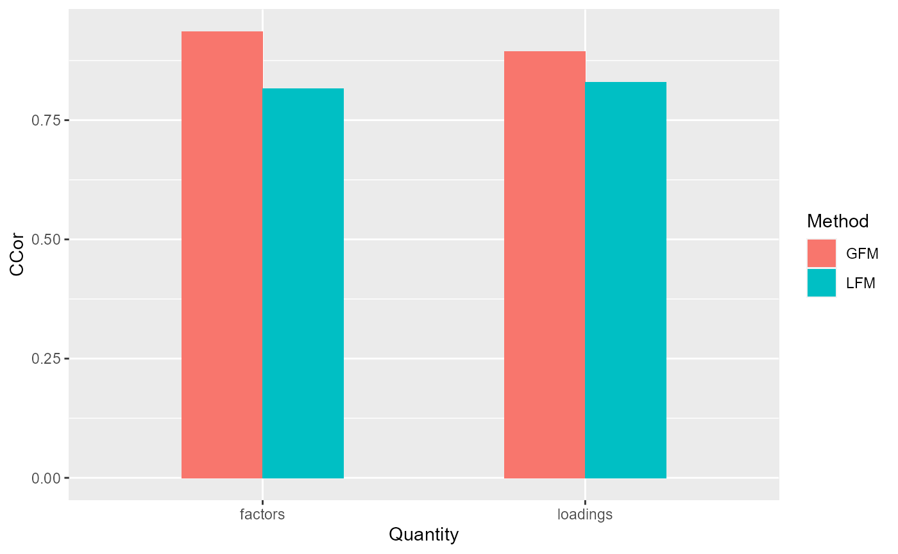
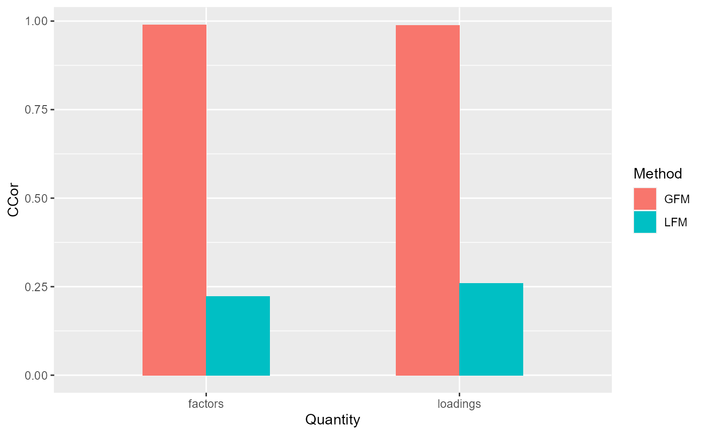
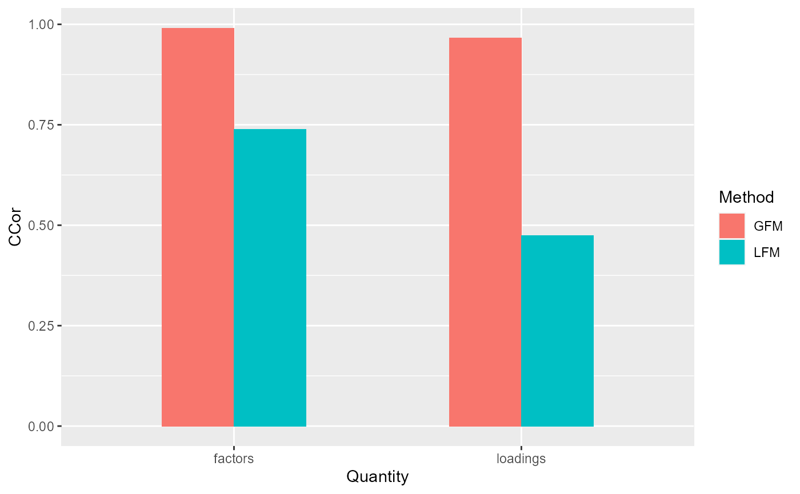

GFM.Simu.RmdThis vignette provides an introduction to the R package GFM, where the function gfm implements the model GFM, Generalized Factor Model for ultra-high dimensional variables with mixed types. The package can be installed with the command:
remotes::install_github("feiyoung/RGFM")
or
The package can be loaded with the command:
library("GFM")
#> Loading required package: doSNOW
#> Warning: package 'doSNOW' was built under R version 4.0.5
#> Loading required package: foreach
#> Loading required package: iterators
#> Loading required package: snow
#> Warning: package 'snow' was built under R version 4.0.5
#> Loading required package: parallel
#>
#> Attaching package: 'parallel'
#> The following objects are masked from 'package:snow':
#>
#> clusterApply, clusterApplyLB, clusterCall, clusterEvalQ,
#> clusterExport, clusterMap, clusterSplit, makeCluster, parApply,
#> parCapply, parLapply, parRapply, parSapply, splitIndices,
#> stopClusterFirst, we generate the data with homogeneous normal variables.
## Homogeneous normal variables
dat <- gendata(q = 2, n=100, p=100, rho=3)Then, we set the algorithm parameters and fit model
# full-one vector means there is only one variable type within all variables.
group <- rep(1,ncol(dat$X))
# set variables' type, 'gaussian' means there is continous variable type.
type <- 'gaussian' Third, we fit the GFM model with user-specified number of factors.
# specify q=2
gfm1 <- gfm(dat$X, group, type, q=2, output = FALSE)
#> Starting the alternate minimization algorithm...
#> Finish the iterative algorithm...
# measure the performance of GFM estimators in terms of canonical correlations
measurefun(gfm1$hH, dat$H0, type='ccor')
#> [1] 0.9893027
measurefun(gfm1$hB, dat$B0, type='ccor')
#> [1] 0.9931255The number of factors can also be determined by data-driven manners.
# select q automatically
gfm2 <- gfm(dat$X, group, type, q=NULL, q_set = 1:6, output = FALSE)
#>
|
| | 0%
|
|============== | 20%
|
|============================ | 40%
|
|========================================== | 60%
|
|======================================================== | 80%
|
|======================================================================| 100%
#>
#> The factor number q is estimated as 2.
#> Starting the alternate minimization algorithm...
#> Finish the iterative algorithm...
# measure the performance of GFM estimators in terms of canonical correlations
measurefun(gfm2$hH, dat$H0, type='ccor')
#> [1] 0.9893027
measurefun(gfm2$hB, dat$B0, type='ccor')
#> [1] 0.9931255First, we generate the data with heterogeous normal variables and set the parameters of algorithm.
dat <- gendata(seed=1, n=100, p=100, type='heternorm', q=2, rho=1)
group <- rep(1,ncol(dat$X))
type <- 'gaussian'Third, we fit the GFM model with user-specified number of factors and compare the results with that of linear factor models.
# specify q=2
gfm1 <- gfm(dat$X, group, type, q=2, output = FALSE)
#> Starting the alternate minimization algorithm...
#> Finish the iterative algorithm...
# measure the performance of GFM estimators in terms of canonical correlations
corH_gfm <- measurefun(gfm1$hH, dat$H0, type='ccor')
corB_gfm <- measurefun(gfm1$hB, dat$B0, type='ccor')
lfm1 <- Factorm(dat$X, q=2)
corH_lfm <- measurefun(lfm1$hH, dat$H0, type='ccor')
corB_lfm <- measurefun(lfm1$hB, dat$B0, type='ccor')
library(ggplot2)
df1 <- data.frame(CCor= c(corH_gfm, corH_lfm, corB_gfm, corB_lfm),
Method =factor(rep(c('GFM', "LFM"), times=2)),
Quantity= factor(c(rep('factors',2), rep("loadings", 2))))
ggplot(data=df1, aes(x=Quantity, y=CCor, fill=Method)) + geom_bar(position = "dodge", stat="identity",width = 0.5)
The number of factors can also be determined by data-driven manners.
# select q automatically
gfm2 <- gfm(dat$X, group, type, q=NULL, q_set = 1:4, output = FALSE)
#>
|
| | 0%
|
|======================= | 33%
|
|=============================================== | 67%
|
|======================================================================| 100%
#>
#> The factor number q is estimated as 2.
#> Starting the alternate minimization algorithm...
#> Finish the iterative algorithm...
# measure the performance of GFM estimators in terms of canonical correlations
corH_gfm <- measurefun(gfm2$hH, dat$H0, type='ccor')
corB_gfm <- measurefun(gfm2$hB, dat$B0, type='ccor')
library(ggplot2)
df1 <- data.frame(CCor= c(corH_gfm, corH_lfm, corB_gfm, corB_lfm),
Method =factor(rep(c('GFM', "LFM"), times=2)),
Quantity= factor(c(rep('factors',2), rep("loadings", 2))))
ggplot(data=df1, aes(x=Quantity, y=CCor, fill=Method)) + geom_bar(position = "dodge", stat="identity",width = 0.5)
First, we generate the data with Count(Poisson) variables and set the parameters of algorithm.
q <- 3; p <- 200
dat <- gendata(seed=1, n=200, p=p, type='pois', q=q, rho=4)
group <- rep(1,ncol(dat$X))
type <- 'poisson'Second, we we fit the GFM models in the parallel manner.
system.time(
gfm2 <- gfm(dat$X, group, type,parallel = TRUE, q=NULL, q_set = 1:4, output = FALSE, fast_version = TRUE))
#>
|
| | 0%
|
|======================= | 33%
|
|=============================================== | 67%
|
|======================================================================| 100%
#>
#> The factor number q is estimated as 3.
#> Starting the alternate minimization algorithm...
#> Finish the iterative algorithm...
#> user system elapsed
#> 2.34 1.21 56.56Third, we compare the results with that of linear factor models.
# measure the performance of GFM estimators in terms of canonical correlations
corH_gfm <- measurefun(gfm2$hH, dat$H0, type='ccor')
corB_gfm <- measurefun(gfm2$hB, dat$B0, type='ccor')
lfm1 <- Factorm(dat$X, q=3)
corH_lfm <- measurefun(lfm1$hH, dat$H0, type='ccor')
corB_lfm <- measurefun(lfm1$hB, dat$B0, type='ccor')
library(ggplot2)
df1 <- data.frame(CCor= c(corH_gfm, corH_lfm, corB_gfm, corB_lfm),
Method =factor(rep(c('GFM', "LFM"), times=2)),
Quantity= factor(c(rep('factors',2), rep("loadings", 2))))
ggplot(data=df1, aes(x=Quantity, y=CCor, fill=Method)) + geom_bar(position = "dodge", stat="identity",width = 0.5)
First, we generate the data with Count(Poisson) variables and set the parameters of algorithm. Then fit the GFM model with user-specified number of factors.
dat <- gendata(seed=1, n=200, p=200, type='pois_bino', q=2, rho=2)
group <- c(rep(1,ncol(dat$X)/2), rep(2,ncol(dat$X)/2))
type <- c('poisson','binomial')
table(dat$X[,1])
#>
#> 0 1 2 3 4 5 6 8 11
#> 52 61 34 26 14 8 3 1 1
table(dat$X[, 200])
#>
#> 0 1
#> 108 92
# user-specified q=2
gfm2 <- gfm(dat$X, group, type, dropout = 2, q=2, output = FALSE, maxIter=5)
#> Starting the alternate minimization algorithm...
#> Finish the iterative algorithm...
measurefun(gfm2$hH, dat$H0, type='ccor')
#> [1] 0.9520175
measurefun(gfm2$hB, dat$B0, type='ccor')
#> [1] 0.9424346Third, we compare the results with that of linear factor models.
# select q automatically
gfm2 <- gfm(dat$X, group, type, dropout = 2, q=NULL, q_set = 1:4, output = FALSE)
#>
|
| | 0%
|
|======================= | 33%
|
|=============================================== | 67%
|
|======================================================================| 100%
#>
#> The factor number q is estimated as 2.
#> Starting the alternate minimization algorithm...
#> Finish the iterative algorithm...
# measure the performance of GFM estimators in terms of canonical correlations
corH_gfm <- measurefun(gfm2$hH, dat$H0, type='ccor')
corB_gfm <- measurefun(gfm2$hB, dat$B0, type='ccor')
Compare with linear factor models
lfm1 <- Factorm(dat$X, q=3)
corH_lfm <- measurefun(lfm1$hH, dat$H0, type='ccor')
corB_lfm <- measurefun(lfm1$hB, dat$B0, type='ccor')
library(ggplot2)
df1 <- data.frame(CCor= c(corH_gfm, corH_lfm, corB_gfm, corB_lfm),
Method =factor(rep(c('GFM', "LFM"), times=2)),
Quantity= factor(c(rep('factors',2), rep("loadings", 2))))
ggplot(data=df1, aes(x=Quantity, y=CCor, fill=Method)) + geom_bar(position = "dodge", stat="identity",width = 0.5) ## Session information
sessionInfo()
#> R version 4.0.3 (2020-10-10)
#> Platform: x86_64-w64-mingw32/x64 (64-bit)
#> Running under: Windows 10 x64 (build 22000)
#>
#> Matrix products: default
#>
#> locale:
#> [1] LC_COLLATE=Chinese (Simplified)_China.936
#> [2] LC_CTYPE=Chinese (Simplified)_China.936
#> [3] LC_MONETARY=Chinese (Simplified)_China.936
#> [4] LC_NUMERIC=C
#> [5] LC_TIME=Chinese (Simplified)_China.936
#>
#> attached base packages:
#> [1] parallel stats graphics grDevices utils datasets methods
#> [8] base
#>
#> other attached packages:
#> [1] ggplot2_3.3.5 GFM_1.1.0 doSNOW_1.0.19 snow_0.4-4
#> [5] iterators_1.0.13 foreach_1.5.1
#>
#> loaded via a namespace (and not attached):
#> [1] tidyselect_1.1.1 xfun_0.28 bslib_0.3.1 purrr_0.3.4
#> [5] colorspace_2.0-2 vctrs_0.3.8 generics_0.1.1 htmltools_0.5.2
#> [9] yaml_2.2.1 utf8_1.2.2 rlang_0.4.11 pkgdown_1.6.1
#> [13] jquerylib_0.1.4 pillar_1.6.4 glue_1.4.2 withr_2.4.3
#> [17] DBI_1.1.1 lifecycle_1.0.1 stringr_1.4.0 munsell_0.5.0
#> [21] gtable_0.3.0 ragg_1.1.3 codetools_0.2-18 memoise_2.0.0
#> [25] evaluate_0.14 labeling_0.4.2 knitr_1.36 fastmap_1.1.0
#> [29] fansi_0.5.0 highr_0.9 scales_1.1.1 cachem_1.0.6
#> [33] desc_1.3.0 jsonlite_1.7.2 farver_2.1.0 systemfonts_1.0.2
#> [37] fs_1.5.2 textshaping_0.3.5 digest_0.6.28 stringi_1.7.5
#> [41] dplyr_1.0.7 grid_4.0.3 rprojroot_2.0.2 tools_4.0.3
#> [45] magrittr_2.0.1 sass_0.4.0 tibble_3.1.5 crayon_1.4.2
#> [49] pkgconfig_2.0.3 MASS_7.3-53.1 ellipsis_0.3.2 assertthat_0.2.1
#> [53] rmarkdown_2.7 R6_2.5.1 compiler_4.0.3